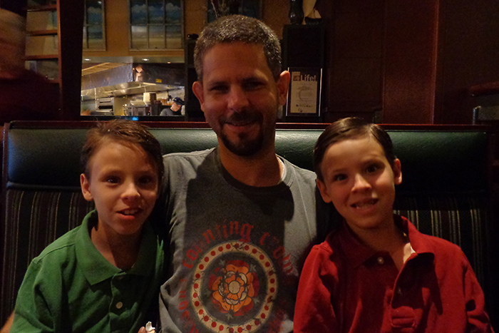

How do I capture thoughtful photos?
Great photos start with great moments. Don’t let them pass you by and stay focused on the action to ensure you capture the most compelling moments.

Change angles and points of view while shooting
Capture long shots to establish location, medium shots to chronicle the action, and close-up shots to focus on details. Squat down and climb hills or stairs, to change your point of view and make pictures from different perspectives.
Make sure that the subject stands out from the background
Dark figures on dark backgrounds or light figures on light backgrounds will wash together.
- 

Use the rule of thirds
Avoid placing the subject in the center of the photograph, which creates a static image. The rule of thirds helps you structure a picture so it’s more visually interesting.
Make sure there are no distracting elements
Watch out for things such as lampposts that might extend from a subject’s head. As you establish your point of view, examine the frame and move around before you take the photo to eliminate visual distractions.